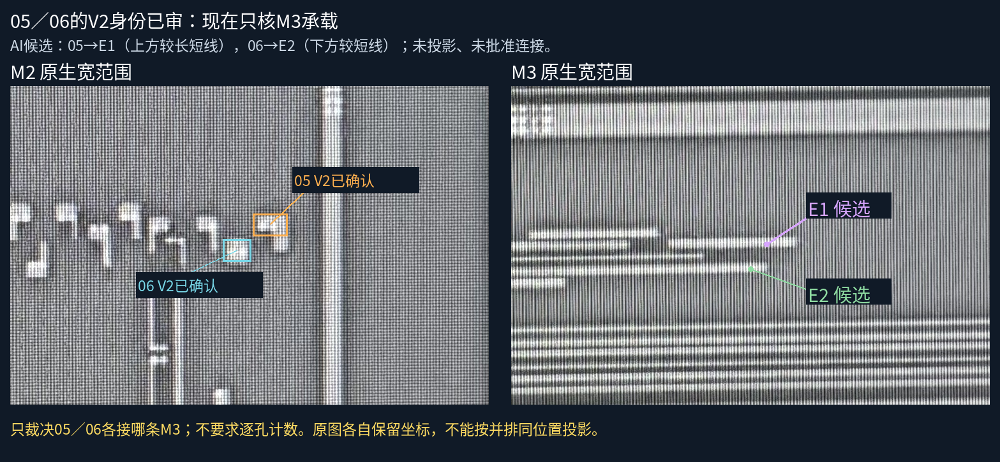
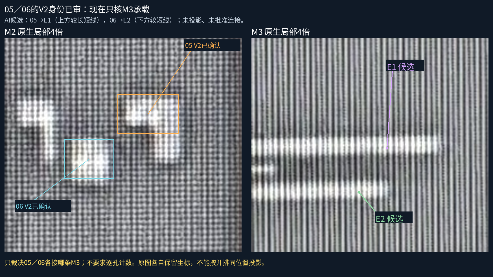
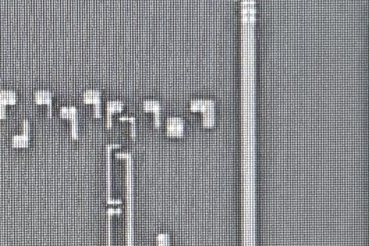

用户原文：都包含V2,批准确认没有问题。两项身份已记录，不再重复询问。AI承载候选05→E1、06→E2；孔数／连接／几何未批准。08仍为本范围未辨认出明确V2，不代表物理无孔。


05是否接上方较长短线E1？06是否接下方较短线E2？可回复“05接E1，06接E2”，或者分别指出其他/仍不清楚。不要求数孔，也不重问05和06是否连续。
顺序、间距和端部结构支持上述候选，但无合格跨层变换；并排图片不是精确配准，M3上的指示点只标其自身短线，不当成V2孔。

当前模型30金属、7个已审承载接口、38设计候选孔保持。无新几何/连接，README/site/gh-pages保持。